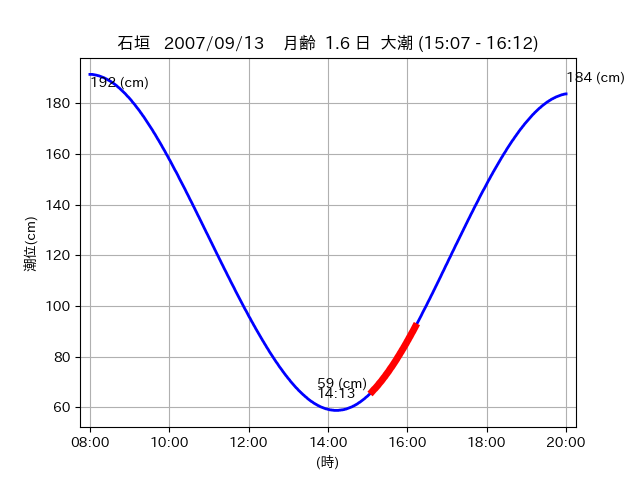

<!DOCTYPE html>
<html>
<head>
    
    <meta http-equiv="content-type" content="text/html; charset=UTF-8" />
    
        <script>
            L_NO_TOUCH = false;
            L_DISABLE_3D = false;
        </script>
    
    <style>html, body {width: 100%;height: 100%;margin: 0;padding: 0;}</style>
    <style>#map {position:absolute;top:0;bottom:0;right:0;left:0;}</style>
    <script src="https://cdn.jsdelivr.net/npm/leaflet@1.9.3/dist/leaflet.js"></script>
    <script src="https://code.jquery.com/jquery-3.7.1.min.js"></script>
    <script src="https://cdn.jsdelivr.net/npm/bootstrap@5.2.2/dist/js/bootstrap.bundle.min.js"></script>
    <script src="https://cdnjs.cloudflare.com/ajax/libs/Leaflet.awesome-markers/2.0.2/leaflet.awesome-markers.js"></script>
    <link rel="stylesheet" href="https://cdn.jsdelivr.net/npm/leaflet@1.9.3/dist/leaflet.css"/>
    <link rel="stylesheet" href="https://cdn.jsdelivr.net/npm/bootstrap@5.2.2/dist/css/bootstrap.min.css"/>
    <link rel="stylesheet" href="https://netdna.bootstrapcdn.com/bootstrap/3.0.0/css/bootstrap-glyphicons.css"/>
    <link rel="stylesheet" href="https://cdn.jsdelivr.net/npm/@fortawesome/fontawesome-free@6.2.0/css/all.min.css"/>
    <link rel="stylesheet" href="https://cdnjs.cloudflare.com/ajax/libs/Leaflet.awesome-markers/2.0.2/leaflet.awesome-markers.css"/>
    <link rel="stylesheet" href="https://cdn.jsdelivr.net/gh/python-visualization/folium/folium/templates/leaflet.awesome.rotate.min.css"/>
    
            <meta name="viewport" content="width=device-width,
                initial-scale=1.0, maximum-scale=1.0, user-scalable=no" />
            <style>
                #map_6f1fde9fd119c3cfeadcfc84e0446597 {
                    position: relative;
                    width: 2048.0px;
                    height: 1600.0px;
                    left: 0.0%;
                    top: 0.0%;
                }
                .leaflet-container { font-size: 1rem; }
            </style>
        
</head>
<body>
    
    
            <div class="folium-map" id="map_6f1fde9fd119c3cfeadcfc84e0446597" ></div>
        
</body>
<script>
    
    
            var map_6f1fde9fd119c3cfeadcfc84e0446597 = L.map(
                "map_6f1fde9fd119c3cfeadcfc84e0446597",
                {
                    center: [24.264, 124.152],
                    crs: L.CRS.EPSG3857,
                    ...{
  "zoom": 12,
  "zoomControl": true,
  "preferCanvas": false,
}

                }
            );

            

        
    
            var tile_layer_1df8ab1b4e8293ff8204a67214bcc98d = L.tileLayer(
                "https://cyberjapandata.gsi.go.jp/xyz/seamlessphoto/{z}/{x}/{y}.jpg",
                {
  "minZoom": 0,
  "maxZoom": 18,
  "maxNativeZoom": 18,
  "noWrap": false,
  "attribution": "\u5730\u7406\u9662\u5730\u56f3",
  "subdomains": "abc",
  "detectRetina": false,
  "tms": false,
  "opacity": 1,
}

            );
        
    
            tile_layer_1df8ab1b4e8293ff8204a67214bcc98d.addTo(map_6f1fde9fd119c3cfeadcfc84e0446597);
        
    
            var marker_8500b4b588437ff9280a6b702aca7401 = L.marker(
                [24.2513, 124.1266],
                {
}
            ).addTo(map_6f1fde9fd119c3cfeadcfc84e0446597);
        
    
            var icon_c47c282474b3bded5f37e6b7f377a479 = L.AwesomeMarkers.icon(
                {
  "markerColor": "orange",
  "iconColor": "white",
  "icon": "info-sign",
  "prefix": "glyphicon",
  "extraClasses": "fa-rotate-0",
}
            );
        
    
        var popup_b7604531d7513c5c217a7bca556edc68 = L.popup({
  "maxWidth": "100%",
});

        
            
                var html_7aa5e0dc472e452b390ee346736b0e85 = $(`<div id="html_7aa5e0dc472e452b390ee346736b0e85" style="width: 100.0%; height: 100.0%;"><table><tr><td></td></tr><tr><td><center>20070913 No.1 </center></table></td></tr></table</div>`)[0];
                popup_b7604531d7513c5c217a7bca556edc68.setContent(html_7aa5e0dc472e452b390ee346736b0e85);
            
        

        marker_8500b4b588437ff9280a6b702aca7401.bindPopup(popup_b7604531d7513c5c217a7bca556edc68)
        ;

        
    
    
                marker_8500b4b588437ff9280a6b702aca7401.setIcon(icon_c47c282474b3bded5f37e6b7f377a479);
            
    
            var poly_line_b62b31aa0ddae6f009258029dc398613 = L.polyline(
                [[24.2513, 124.1266], [24.2533, 124.1319]],
                {"bubblingMouseEvents": true, "color": "#FF00FF", "dashArray": null, "dashOffset": null, "fill": false, "fillColor": "#FF00FF", "fillOpacity": 0.2, "fillRule": "evenodd", "lineCap": "round", "lineJoin": "round", "noClip": false, "opacity": 1.0, "smoothFactor": 1.0, "stroke": true, "weight": 3}
            ).addTo(map_6f1fde9fd119c3cfeadcfc84e0446597);
        
    
            var marker_422ab8c4ad1bb739acb7340ea362e26d = L.marker(
                [24.2664, 124.1556],
                {
}
            ).addTo(map_6f1fde9fd119c3cfeadcfc84e0446597);
        
    
            var icon_2db91829ccc88fa6e7bcf35c3b3225fe = L.AwesomeMarkers.icon(
                {
  "markerColor": "orange",
  "iconColor": "white",
  "icon": "info-sign",
  "prefix": "glyphicon",
  "extraClasses": "fa-rotate-0",
}
            );
        
    
        var popup_204f19b08bc31338268fecd6fefbcc90 = L.popup({
  "maxWidth": "100%",
});

        
            
                var html_2cf358e10fd333c3452258dfbe60a324 = $(`<div id="html_2cf358e10fd333c3452258dfbe60a324" style="width: 100.0%; height: 100.0%;"><table><tr><td></td></tr><tr><td><center>20070913 No.2 </center></table></td></tr></table</div>`)[0];
                popup_204f19b08bc31338268fecd6fefbcc90.setContent(html_2cf358e10fd333c3452258dfbe60a324);
            
        

        marker_422ab8c4ad1bb739acb7340ea362e26d.bindPopup(popup_204f19b08bc31338268fecd6fefbcc90)
        ;

        
    
    
                marker_422ab8c4ad1bb739acb7340ea362e26d.setIcon(icon_2db91829ccc88fa6e7bcf35c3b3225fe);
            
    
            var poly_line_43b6ef2489607e8da72fda1dc68e5cec = L.polyline(
                [[24.2664, 124.1556], [24.261, 124.1488]],
                {"bubblingMouseEvents": true, "color": "#00FFFF", "dashArray": null, "dashOffset": null, "fill": false, "fillColor": "#00FFFF", "fillOpacity": 0.2, "fillRule": "evenodd", "lineCap": "round", "lineJoin": "round", "noClip": false, "opacity": 1.0, "smoothFactor": 1.0, "stroke": true, "weight": 3}
            ).addTo(map_6f1fde9fd119c3cfeadcfc84e0446597);
        
</script>
</html>